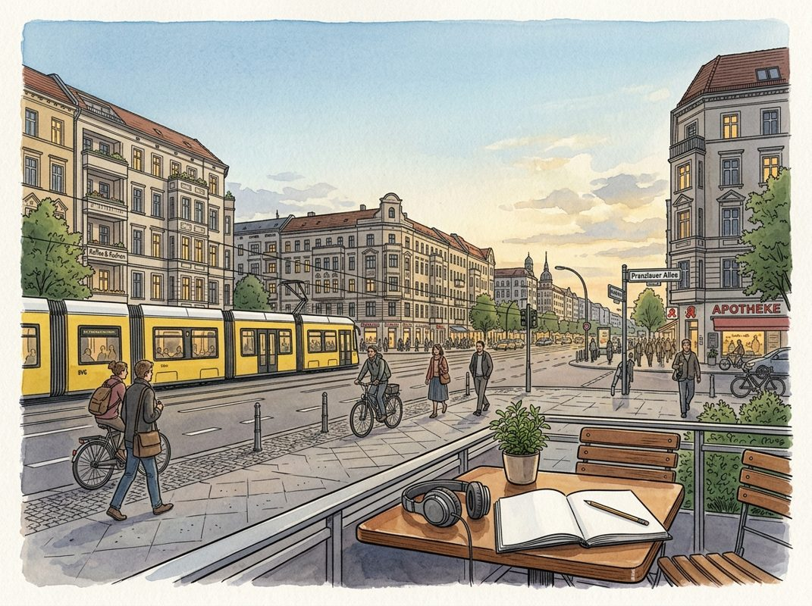

9/27

今日更新
Building the Streetwear Empire Kith | Ronnie Fieg
来源：David-Senra
原链接：https://davidsenra.com/episode/ronnie-fieg
状态：已读网页 transcript
这期播客深入探讨了Kith创始人Ronnie Fieg如何凭借对产品和文化的极致热爱，从底层员工成长为潮流帝国的缔造者。它揭示了通过坚持第一性原理、构建独特体验而非追逐短期利益，实现品牌伟大与长青的秘诀。本期节目适合所有对创业、品牌建设、潮流文化以及如何将个人激情转化为商业成功感兴趣的听众。
- 激情之源：皇后区童年与13岁的职业选择：Ronnie Fieg的创业之路始于他对时尚的早期热情。在皇后区牙买加的多元文化环境中，他从小就渴望穿着时髦，但家庭经济条件不允许。这种渴望促使他在13岁时，在自己的成人礼上，毅然拒绝了亲戚David Z（一位鞋店老板）递来的现金红包，转而要求一份工作。他从David Z的仓库管理员做起，在纽约8街这个文化熔炉中，亲身感受并学习了潮流的脉动，尤其是在当时盛行的工装靴文化中，这为他日后对产品和消费者需求的深刻理解奠定了基础。
- 从学徒到买手：15年零售业的摸爬滚打：在David Z的15年间，Ronnie Fieg从仓库管理员一路晋升为销售员、助理经理、经理，最终成为买手兼总经理。这段经历让他全面掌握了零售业务的各个环节，从产品接收、销售、库存管理到采购。他不仅帮助David Z成功从工装靴业务转型到运动鞋市场，还首次接触到“特殊定制款”（SMU）的概念，例如David Z曾推出的灰色Timberland靴子，这让他看到了独家产品所能产生的巨大吸引力。这段经历磨练了他对市场趋势的判断力，也为他未来创立Kith积累了宝贵的行业知识和人脉。
- ASICS联名：个人品味的商业化起点：2006年，23岁的Ronnie Fieg获得了与ASICS合作的机会，设计自己的鞋款。他选择了一款童年时期母亲为他购买的Gel-Lyte III，这款鞋对他有着特殊的个人意义。他坚持“为自己设计”的原则，创造了三款配色，每款限量252双。这款鞋的发布初期反响平平，但一篇《华尔街日报》的报道使其一夜爆红，引发了排队抢购热潮。这次成功不仅让他声名鹊起，还吸引了阿迪达斯北美区CEO的注意，促成了后续的“Black Tie”联名款。这些早期合作验证了他“为自己设计”的理念，并证明了限量、独特产品在市场上的巨大潜力。
- Kith的诞生：从“朋友”到潮流品牌：在David Z工作期间，Ronnie Fieg意识到，他所创造的限量联名款吸引的消费者，与David Z日常销售的大众产品消费者并非同一群体。他渴望专注于100%自己热爱和认可的产品，而非被“平庸”的产品稀释。受史蒂夫·乔布斯“剔除糟粕，专注精品”理念的启发，他于2011年创立了Kith。Kith意为“朋友”，旨在打造一个热情友好的空间，让顾客感到宾至如归。最初Kith只是一个多品牌鞋店，但由于社区对Kith品牌T恤的需求，Kith意外地发展成为一个自有品牌。他甚至为此支付了高昂的代价，从一个意大利骗子手中赎回了Kith的服装商标权，深刻认识到品牌IP的重要性。
- 体验至上：拒绝批发与坚持实体店扩张：Kith成功的关键在于Ronnie Fieg对品牌体验的极致控制。他坚决不进行批发或授权，因为这会削弱品牌对产品呈现、营销叙事和消费者体验的掌控力。他认为，作为产品的创造者，他最能讲述品牌故事，并确保从产品构思到顾客离店的整个过程都符合Kith的标准。尽管线上销售持续增长，他却反其道而行之，坚持开设更多实体店，以确保线上和线下销售额保持平衡。他认为，实体店能提供数字世界无法替代的触感和沉浸式体验，这是对品牌粉丝的责任，也是Kith区别于纯数字品牌的独特优势。
历史精选
Season 1
来源：Acquired
原链接：https://www.acquired.fm/season/1
状态：已读网页全文
Acquired播客第一季通过深入剖析一系列标志性的企业收购与IPO案例，为听众提供了一幅生动的商业并购图景。它不仅揭示了科技巨头和新兴企业在市场竞争中的战略考量、成败关键，更通过对历史事件的复盘，提炼出关于创新、增长、估值与整合的普适性商业智慧。这期节目尤其适合对科技史、商业策略、投资并购以及企业成长路径感兴趣的创业者、投资者和商业分析师。
- 巨头们的战略布局：构建生态与核心竞争力：苹果通过收购P.A. Semi和AuthenTec将芯片和TouchID技术内化，强化了其硬件垂直整合能力，确保了核心产品的差异化优势。同时，对SoundJam（iTunes前身）的收购奠定了其数字音乐生态的基础。谷歌对Android的收购则以极低的成本（传闻5000万美元）获得了移动操作系统的统治地位，并收购Waze以巩固其地图服务。微软在Satya Nadella领导下，通过收购Acompli、Sunrise和Wunderlist等应用，加速了其“云优先、移动优先”战略，强调跨平台服务的重要性，而非仅仅追求营收。这些案例共同揭示了巨头们如何通过并购来构建和巩固其生态系统及核心技术护城河。
- 颠覆与融合：零售、媒体与社交的变迁：亚马逊以137亿美元收购全食超市，不仅是其“万货商店”愿景的延伸，更预示着其对传统零售业的深度颠覆。此举结合了其在物流（Kiva Systems）和电商（Webvan域名）的积累，旨在打造线上线下一体化的购物体验。Facebook在移动转型期的IPO虽然经历波折，但其通过收购Instagram（被誉为“史上最佳收购之一”）和尝试收购Snapchat（未成功），展现了其在社交媒体领域的强大整合能力和对未来趋势的敏锐洞察。媒体行业也面临巨变，迪士尼收购BAMTech预示着传统媒体向流媒体转型的决心，而AOL-时代华纳的失败则成为互联网与传统媒体融合的警示。
- 娱乐帝国的扩张：迪士尼的IP与协同效应：迪士尼在鲍勃·伊格尔的领导下，通过一系列高瞻远瞩的收购，成功重塑了其娱乐帝国。对皮克斯（2006年）、漫威（2009年）和卢卡斯影业（2012年）的收购，不仅为其带来了《玩具总动员》、《复仇者联盟》和《星球大战》等顶级IP，更重要的是，迪士尼展现了将这些IP融入其“飞轮效应”的能力，通过电影、主题公园、消费品、流媒体等多元渠道实现价值最大化。这些案例强调了IP的长期价值、品牌协同效应以及卓越的整合能力在并购成功中的关键作用。
- 独角兽的浮沉与IPO的估值迷思：第一季探讨了多起独角兽公司的IPO和收购，揭示了市场对高增长科技公司的估值分歧。Stitch Fix IPO定价低于预期，引发了市场对“硅谷颠覆者”估值的担忧。Square IPO也曾被视为“独角兽寒冬”的信号，但最终证明其价值被低估。Snap Inc.的IPO备受瞩目，但其作为“相机公司”的定位和盈利模式仍存争议。沃尔玛以30多亿美元收购成立仅两年的Jet.com，旨在对抗亚马逊，其长期效果有待观察。这些案例反映了公开市场对新兴科技公司估值更为审慎的态度，以及创业公司在快速增长与盈利能力之间寻求平衡的挑战。
- M&A的幕后：从谈判到整合的艺术：播客邀请了多位行业专家，如Adobe的企业发展负责人Taylor Barada、微软战略投资负责人Brian Schultz、Opsware收购方HP的Michel Feaster等，深入探讨了M&A的实战经验。他们强调了建立长期关系、文化契合度、构建与购买的决策权衡、以及并购后整合的重要性。例如，Opsware的成功整合得益于Ben Horowitz的领导和Michel Feaster的执行。Booking.com被Priceline收购后，从一个鲜为人知的荷兰初创公司成长为全球最大的旅游公司，其整合策略和独立运营模式被认为是典范。这些讨论揭示了并购并非简单的财务交易，而是涉及战略、文化、人才和执行的复杂艺术。
[email protected]
来源：Business Breakdowns
原链接：https://joincolossus.com/cdn-cgi/l/email-protection
状态：材料不足
材料不足：这期需要 transcript 或更完整正文后再做全篇摘要。
- 网页正文抓取失败：HTTP Error 404: Not Found